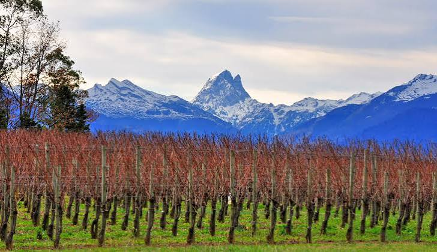
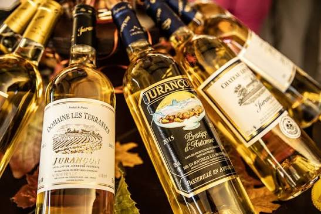

Jurançon
AOP


⟹ Vins & Boissons ⟸
Le Jurançon est l'un des vins les plus singuliers et les plus attachants du Sud-Ouest de la France. Produit sur les coteaux abrupts des Pyrénées-Atlantiques, au sud de Pau, il tire son nom de la commune de Jurançon et bénéficie d'une réputation royale — c'est le vin qui aurait touché les lèvres du futur Henri IV dès sa naissance en 1553, lorsque son grand-père, le roi de Navarre, lui en aurait fait frotter les lèvres avec de l'ail et une goutte de Jurançon pour lui donner force et caractère gascon.

La vigne est cultivée dans la région de Pau depuis le Moyen Âge, mais c'est sous le règne de Henri IV que le Jurançon connaît son premier grand rayonnement. Le vin blanc moelleux des coteaux béarnais est alors servi à la cour de France et exporté vers l'Angleterre et les Pays-Bas. Sa réputation de vin royal lui vaut une protection particulière — les vignerons de Jurançon bénéficient de privilèges commerciaux accordés par le roi.
« Jurançon, vin impétueux, vin insolent, vin bearnais comme Henri IV ! »
— Colette, Prisons et paradis, 1932Le XIXe siècle est une période difficile pour le vignoble — le phylloxéra ravage les coteaux béarnais comme partout en France, et la reconstruction est longue et laborieuse. L'AOC Jurançon est reconnue en 1936, donnant un cadre juridique à une production qui s'était maintenue grâce à la ténacité des vignerons locaux. L'AOC Jurançon Sec, créée plus tard en 1975, officialise les vins secs qui représentent aujourd'hui une part croissante de la production.

Aujourd'hui, le vignoble de Jurançon s'étend sur environ 1 200 hectares et regroupe une centaine de producteurs, dont beaucoup sont de petites exploitations familiales. La Cave de Gan-Jurançon, coopérative fondée en 1950, vinifie environ 50 % de la production. Les vins de Jurançon — secs et moelleux — connaissent une renaissance remarquable portée par des producteurs talentueux qui ont hissé l'appellation parmi les grandes références des vins blancs français.
Jurançon Sec & Fruits de mer : sa vivacité et sa tension minérale en font le compagnon idéal des huîtres du Bassin d'Arcachon, des coquilles Saint-Jacques, des langoustines et des poissons nobles. Servi bien frais (10°C), il révèle une fraîcheur et une longueur aromatique remarquables sur les plats iodés.
Jurançon Sec & Fromage de brebis basque : l'accord régional par excellence — un Jurançon Sec et une tranche d'Ossau-Iraty AOP, accompagnés d'une cuillerée de confiture de cerises noires d'Itxassou. La tension du vin, la rondeur du fromage et la douceur acidulée de la confiture composent un trio d'une harmonie parfaite.
Jurançon Moelleux & Foie gras : l'un des grands accords du Sud-Ouest — un Jurançon moelleux bien frais avec du foie gras mi-cuit du Périgord. La richesse sucrée et les arômes exotiques du vin répondent à l'onctuosité du foie gras dans un équilibre d'une rare élégance. L'accord est souvent préféré au Sauternes par les amateurs du Sud-Ouest.
Jurançon Moelleux & Fromages persillés : le contraste sucré-salé entre un Jurançon moelleux et un Roquefort ou un Bleu des Causses est l'un des accords les plus surprenants et les plus mémorables de la gastronomie française. L'acidité du vin tranche avec le gras et le salé du fromage dans une tension gourmande absolue.
Jurançon Vendanges Tardives & Desserts : les grands moelleux tardifs accompagnent à merveille une tarte Tatin aux pommes, une crème brûlée à la vanille ou un gâteau basque à la crème. Leur richesse et leur complexité aromatique soutiennent les desserts les plus élaborés sans jamais les écraser.
Jurançon Sec en apéritif : simplement servi frais dans un verre à vin blanc, avec quelques amandes grillées ou une tapenade — la façon la plus simple et la plus festive de découvrir la fraîcheur et l'originalité de ce vin blanc d'exception.
Le vignoble de Jurançon est à moins d'une heure de route des stations de ski pyrénéennes — une destination œnotouristique quatre saisons dans un cadre naturel exceptionnel.
Gan — La Cave de Jurançon — La grande coopérative de l'appellation propose des visites guidées et des dégustations commentées de toute la gamme — secs, moelleux et vendanges tardives — dans un caveau moderne au cœur du vignoble. L'adresse incontournable pour une première découverte de l'appellation.
Domaine Cauhapé (Monein) — L'un des domaines les plus réputés du Jurançon, pionnier de la renaissance de l'appellation. Henri Ramonteu y produit des cuvées de référence, notamment le célèbre « Quintessence du Petit Manseng », considéré comme l'un des grands vins moelleux de France.
Domaine de Souch (Laroin) — Exploitation biologique pionnière, Yvonne Hegoburu y élabore des Jurançon d'une pureté et d'une finesse remarquables, régulièrement primés dans les concours nationaux. Visites sur rendez-vous avec dégustation dans un cadre intimiste.
Pau — Château de Pau — Le château natal d'Henri IV, symbole du lien historique entre le Béarn et le Jurançon, accueille des expositions permanentes et temporaires sur l'histoire de la région et de ses vins. La boutique propose une sélection de Jurançon sélectionnés par les vignerons locaux.
La Route des Vins de Jurançon — Circuit balisé de 40 km à travers les coteaux entre Gan, Monein et Lasseube. Une vingtaine de domaines sont ouverts à la visite avec dégustations. Le meilleur moyen de découvrir la diversité des terroirs et des styles dans un paysage de vignes en terrasses face aux Pyrénées.